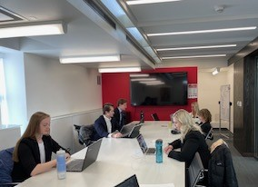

Dacoda is pursuing her Master’s Degree in
Biomedical Engineering at the University of Minnesota
Dacoda's career goals point to the prosthetics and orthotics industry,
either doing clinical work or research
Dacoda received a Bachelor of Arts degree in Math from the
College of St. Benedict in St. Joseph, MN

Dacoda was part of the Mayo Innovation Scholars Program
during her senior year in college

Click the link to view an article on the research project findings
Link to MN Private Collages Newsroom ArticleDacoda conducted research through a grant program and
created a prosthetic arm prototype